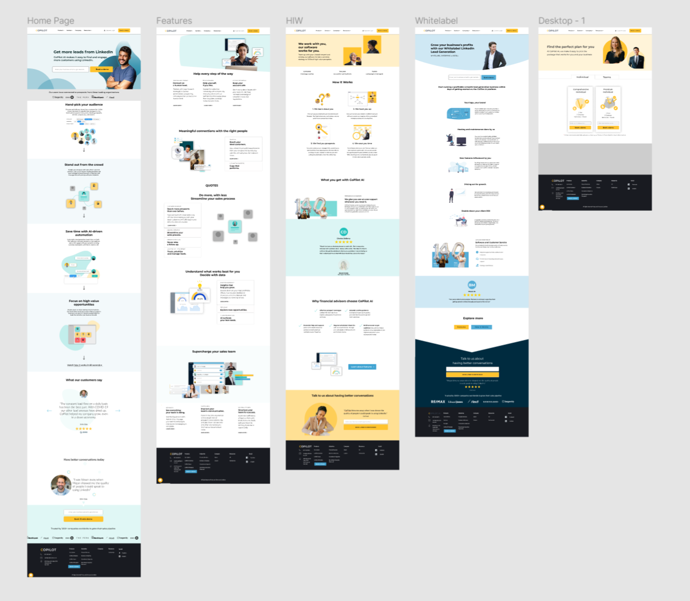
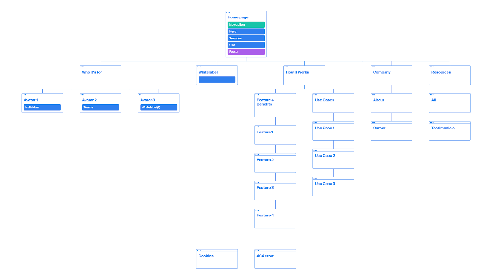

CoPilot AI Website Redesign
Context
CoPilot AI is a SaaS company based in Vancouver, Canada. The company’s mission
is to fundamentally change the way people connect with businesses.
At CoPilot AI, I worked with the Marketing Team as a Communications Designer.
Within the 4 months that I worked at CoPilot AI, I worked on a wide range of
different projects including designing Facebook Ads, EBooks, Social Media Content,
Internal Material, and Website related projects.
Overview
Although the current CoPilot AI Website did it’s intended job of informing users of our product, services, and generating leads, the Team felt that both the visual design, copy, and user journey could be improved. Our goal with the redesign was to provide the user with a simple frictionless user journey, along with updating the visual design to be more modern and clean, with the ultimate goal of increasing leads.
Scope and Responsibilities
My primary responsibilities were creating the visual elements that were needed for the site and to complement the copy provided for me. Along with that, I created Figma prototypes (See Figure 1) that helped the team visualize and test out ideas.
Figure 1:Figma prototypes that I created before implementation to help the team visualize and test out ideas.
Process
After one of our initial meetings,I created a sitemap (See Figure. 3) that we would follow based on our discussion during the meeting.
Figure 2:CoPilot AI Sitemap
Visual/Graphics Design
The graphics of the site was my main responsibility, and it was important to
represent the copy accurately.
Before beginning to work on the site, I looked into other Saas company websites
for inspiration before sharing them with my team, one of them being Zendesk.
The team really liked Zendesk’s clean interface and the way they created
simple graphical elements based on their product (See Figure 3).
After this discussion, it gave me a starting point to start thinking
about what we were looking for in our own visual design.
Figure 3: Screencaps of graphics that can be found on Zendesk's website.
After being given the copy by my team, the next step was to mockup rough drafts of the site and visuals (See figure. 4) to show my team, and to communicate my ideas on how to organize the information and in order to receive feedback.
Figure 4: Rough mockups of how we planned to organize the information for the home page along with the graphical elements.
After this step, it was a back and forth between me and my team regarding their feedback on the concept,
and it was my job to take them into consideration and come up with a new solution. An example of this
process can be found in the first graphical element I created for the homepage, with the concept being
“Hand pick your audience”.
My initial idea for this was to have a group of illustrated people, along with a mouse that picks
out the ones that matched the user’s criteria (See Figure 5).
Figure 5: First high-fidelity version of the graphic for “Hand pick your audience”.
However I felt that the initial concept wasn’t representing our product accurately. The issue was that it portrayed the process as though the user was doing the process manually, when our product was actually doing the work for them after they had selected their desired criteria. After discussing this with my teammate, we agreed on the new concept I came up with (See Figure 6).
.gif)
Figure 6: Final version for “Hand pick your audience”, my team advised me to use images of real people instead of icons.
Although the new concept was still abstract, it resembled and illustrated the real process much more accurately and highlighted
the efficiency of our product. The abstractness is what we aimed for in the homepage because we believed that the homepage’s
goal was to engage the user. Meanwhile, on the Features page you can find graphics that are less abstract and resemble the product more.
The rest of the graphics on our other webpages ( HomePage , Features , How It Works , Packages , Whitelabel ) followed the same process.
Challenges
During this project, I definitely faced many challenges during the process I illustrated above. It was difficult to take into consideration everyone’s feedback and still follow through with my own ideas and decisions. However, my team was extremely supportive and always provided insightful ideas and supported me in my decisions.
Takeaways
This was the biggest and most rewarding project that I have worked on at CoPilot AI. This project taught
me to design for an older age group, which I wasn’t used to. I was also able to learn a lot from my team
who had expertise in marketing, and taught me to design for other considerations such as how to capture
the user’s attention, keep them engaged, and tell them enough about our product in order for them to book a demo.
It was my first time designing something that would be taken in by so many people, and I look forward to
seeing what difference it will make. You can check out the site here.
The Next Step
This project is still in process, the team wants to continue revamping the entire company website such
as the “Sectors” section.
Data of whether the website redesign will increase our conversion rate wil be provided once gathered.